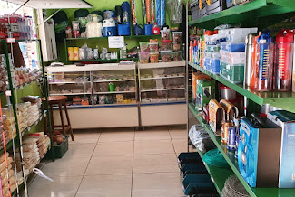
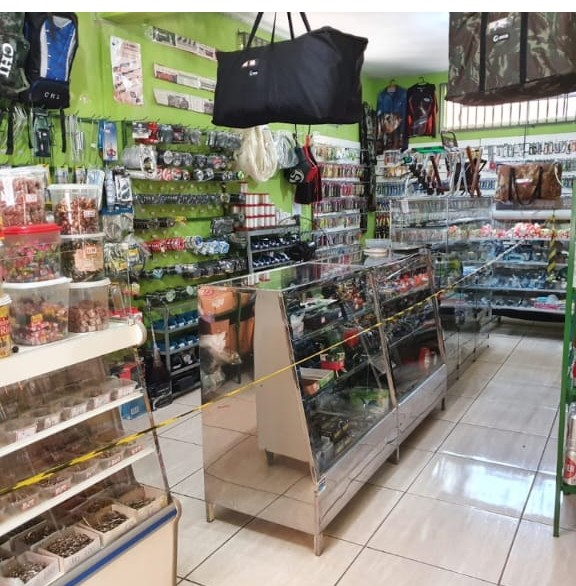

Casa do Pescador
Endereço: Rua Várzea Palma, 97 - Centro
Especializada em todos os tipos de equipamentos de pesca.
Ver Rota

Casa de Pesca Tucunaré
Endereço: Rua Vinícius de Morais, 53 - Joaquiam de Lima
Grande variedade de iscas e acessórios para pesca.
Ver Rota